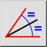
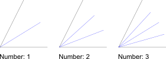

Kut Sredine
Alatna traka / Ikona:


Izbornik: Crtaj > Linija > Kut Sredine
Prečac: L, B
Naredbe: linebisector | bisector | lb
Opis
Ovaj alat upotrebljavate za stvaranje simetrala kuta između dvaju entiteta linije.
Upotreba
- Odaberite željenu vrstu linije u alatnoj traci opcija.
- U alatnu traku opcija unesite duljinu simetrale (ili simetrala), počevši od sjecišta dviju linija. U drugom tekstualnom okviru odaberite broj simetrala kuta koje želite stvoriti. Zadana vrijednost je „1”, ali možete stvoriti i više simetrala kako je prikazano ovdje:

- Kliknite prvi entitet linije koji ograničava kut.
- Kliknite drugi entitet linije s pokazivačem miša na onoj strani linije na kojoj želite stvoriti simetralu (ili simetrale) kuta. Pretpregled prikazuje simetralu (ili simetrale) kuta prije nego što se stvore.